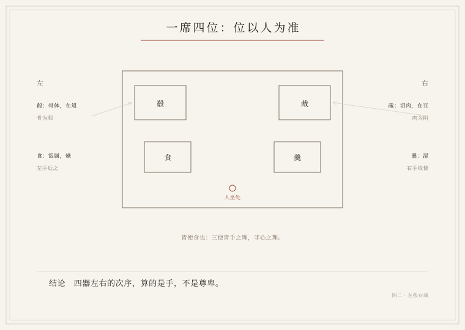

曲礼上 · 一·五十九 · 第 57 课
一顿饭的摆法：带骨的熟肉放左边，纯切的肉放右边；饭放在人的左手边，羹放在右手边。全为取食之便。
说什么事：凡进食之礼，左殽右胾；食居人之左，羹居人之右。
落在哪一层：器。上节讲称谓之别，此节起讲燕食之陈，自此至「客不虚口」，一课一节，皆饮食之仪。
为何编在此位：前此皆言人与人之分，此下转入一席之间的位置；位定而后仪可行。
【经】凡進食之禮，左殽右胾。食居人之左，羹居人之右。
【注】皆便食也。殽，骨體也。胾，切肉也。食，飯屬也。居人左右，明其近也。殽在俎，胾在豆。
左殽右胾 疏：「熟肉带骨而脔曰殽，纯肉切之曰胾。」骨是阳，故在左；肉是阴，故在右。
食居人之左，羹居人之右 疏：「食饭燥为阳，故居左；羹湿是阴，故右设之。」两物并在殽胾之内，最近于人。
皆便食也 疏析为三便：纯肉在右，先取为便；羹饭并近人，先取羹饭亦便；饭左羹右，右手取羹，亦便。
明其近也 注「居人左右，明其近也」。不曰「居席左右」而曰「居人」，位是为人设的。
殽在俎，胾在豆 疏以《春秋》宣十六年「殽烝」「折俎」、《昏礼》《特牲》《少牢》骨体在俎，证殽在俎；以《公食大夫礼》庶羞十六豆有牛胾、羊胾，证胾在豆。
凡陈设饮食之礼：带骨的肉放在左边，纯切的肉放在右边；饭放在人的左手边，羹放在右手边。
全节的关键在注的首二字「便食」。四样东西的左右，不是尊卑的排位，是取用的顺手。礼在这里不摆架子，只算手。而「居人」二字更进一层：位置的意义在于人坐何处、手向哪边伸。
第一层 左殽右胾的阴阳 疏以骨为阳、纯肉为阴，故骨左肉右。这是秦汉间人解礼的通行思路：以阴阳配左右，使位有其理。今日读之，可取其「有序」，不必尽取「阴阳」。
第二层 食左羹右的三便 疏把「便」拆得很实：右手取羹，故羹在右；饭燥在左，故左手近饭；纯肉在右，故先取肉。三条都是手的道理，不是心的道理。
第三层 明其近 四物都「居人」左右，可见陈设之礼以人为坐标。席可以移，人坐定之处才是准星。
第四层 殽俎胾豆 殽在俎（骨体大，须俎），胾在豆（切肉小，可豆）。器随物制，非物随器屈。此层见礼器之学：器之形制，先服从事物之性。
与今日何干 今人一桌菜，摆法随意。若要取一条可用的：先把主食用在最顺手处，汤水在另一手侧；客不必起身伸臂。此即「便食」之遗意。
| 左 | 右 |
|---|---|
| 左殽 | 骨体，在俎；骨为阳 |
| 右胾 | 切肉，在豆；肉为阴 |
| 食居人之左 | 饭属，燥为阳 |
| 羹居人之右 | 湿为阴，右手取便 |
| 皆便食 | 三便：先取肉、近羹饭、右手取羹 |
| 明其近 | 位以人为准 |
画一张矮案近景俯视：案心空出一人坐处，案左一具俎，俎上带骨肉块；案右一只豆，豆中切肉片；俎豆之内，左一小簋盛饭，右一只羹器，器中有勺。四器皆贴近空处。不画人、不写文字。赭色只在俎足与勺柄。
